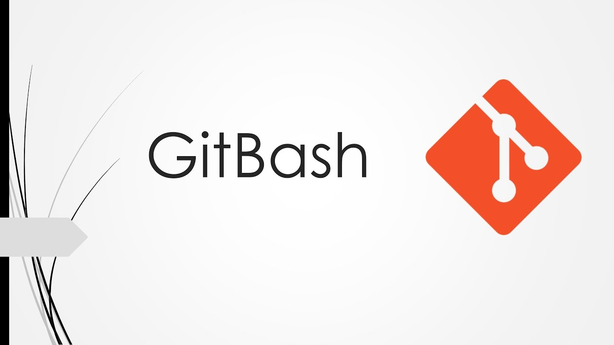
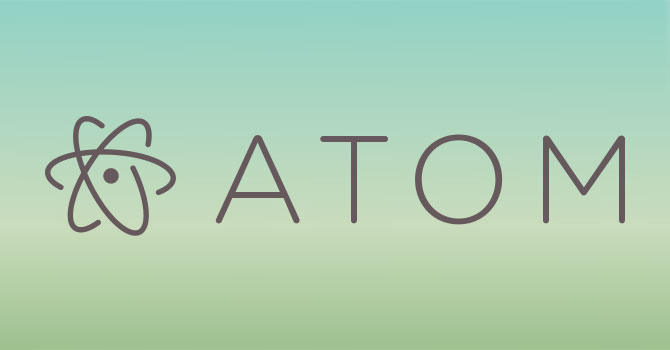

GitHub

Github is an online resource we will use to save all of our projects. We will also use this website to turn our work in.
Here is the link to Github!
!!!INSERT A VIDEO ON HOW TO LOG INTO GitHub!!!
GitBash
Git bash is a shell command line that allows you to alter files using the a command prompt versus the GUI Interface.
Here is the link to GitBash!
Atom
Atom is the text editor we will be using in class. There are tons of free text editors out that you can use. Atom is the one that we landed on. Feel free to try out any number of text editors to find the one that fits you the most.
Here is the link to Atom!